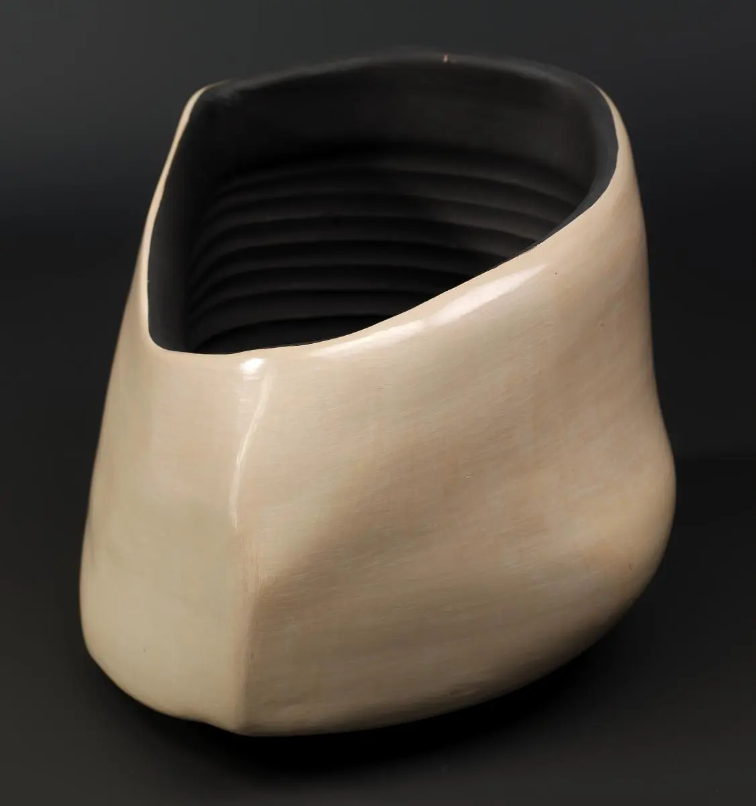
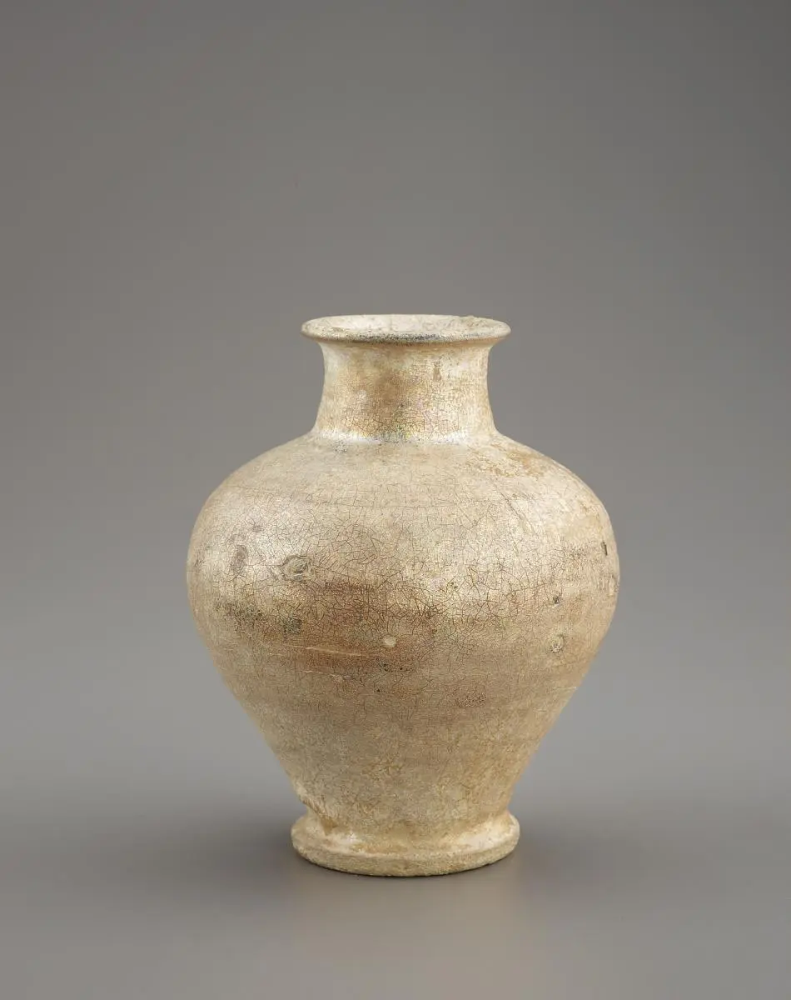
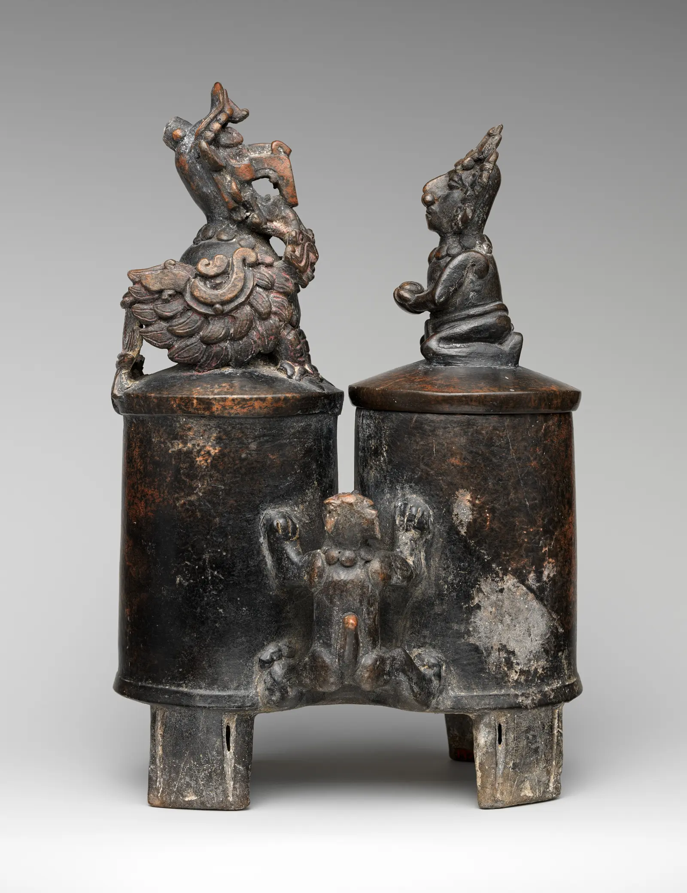
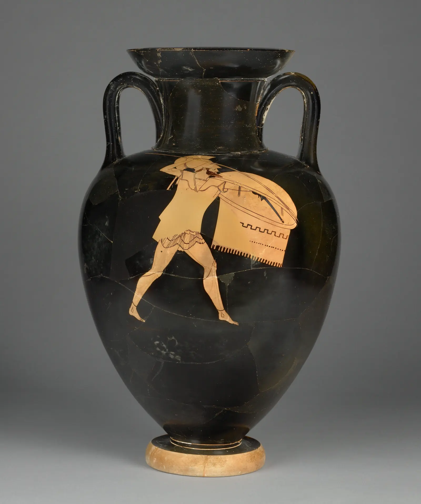
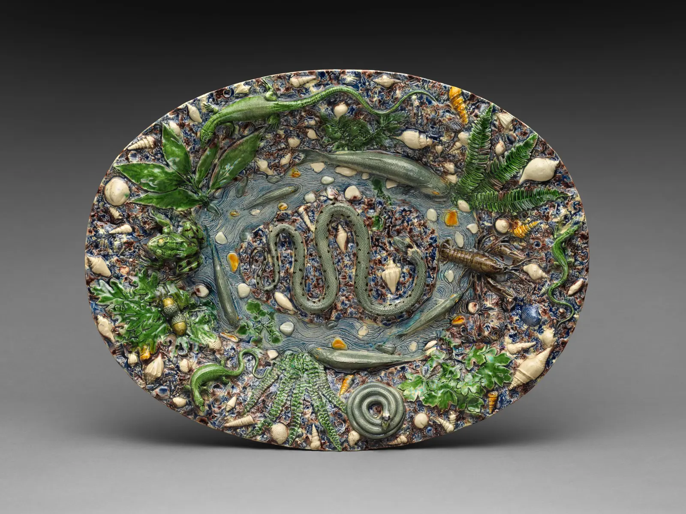

Prerequisite
A portfolio with one artifact and one process record from every prior phase, plus evidence of joining, surface testing, firing literacy, and diagnosis.
Phase 08 · 18–30 hours over 6 weeks
Move from isolated successes to a series that asks a question. Build a repeatable cycle of research, constraint, variation, critique, selection, and revision.

Aim
A portfolio with one artifact and one process record from every prior phase, plus evidence of joining, surface testing, firing literacy, and diagnosis.
You can frame a productive inquiry, develop variations, seek critique, select rigorously, and design your next learning cycle.
A precedent map, constraint brief, maquettes, 3–5 resolved works, process archive, critique record, and six-week plan.
What can remain constant so that one meaningful difference becomes visible?
Hold a family resemblance—method, scale, clay, profile logic, or surface rule—while changing one high-value variable. The contrast makes learning and meaning legible.
“How does an opening shift from invitation to refusal?” is more generative than “make organic pots.” It names a relation you can test through form.
Study three sources: one historical work, one contemporary practitioner, and one source outside ceramics. For each, record the problem addressed, formal strategy, material consequence, and what you will not copy.
Write one constraint in each category: method, scale, profile, surface, function/context, and time. Remove two. The remaining four should focus the work without deciding it in advance.
Finish this sentence: “Across this series I will hold ___ constant and vary ___ to investigate ___.”

Analyze how mass, opening, rhythm, surface, and use work together. Transfer a relationship—such as compressed base versus expanding shoulder—into your own constraints.
Medieval vase, Smithsonian American Art Museum. Free to use. Object page
What is physically present? Avoid praise, dislike, and intention.
How do form, surface, scale, and relation guide use and attention?
What single change would most strongly test the stated question?
| Week | Focus | Evidence |
|---|---|---|
| 1 | Question, precedents, constraints | Inquiry statement + source map |
| 2 | Maquettes and material tests | Eight variations + test matrix |
| 3 | First resolved works and final making | Build logs + photographs |
| 4 | Critique and revision | Feedback map + priority change |
| 5 | Drying and firing already-dry work | Firing and location records |
| 6 | Selection and documentation | 3–5 works + reflection |
For each phase, record the competency, artifact, process record, diagnosis or decision, present level, and next need. Use the shared scale: 0 no evidence; 1 recognition; 2 guided performance; 3 independent competence; 4 adaptive competence. Summarize four domains: understanding, execution, judgment, and reflection/transfer.
Inspiration · look comparatively
Compare a vessel that performs sound and narrative, an amphora where figure and ground choreograph one another, and a platter transformed into topography.



Knowledge check · 3 questions
Choose one answer for each situation. Open a hint when needed; explanations appear after you check all three.
Capstone review · 32 points
| Criterion | 1 | 2 | 3 | 4 |
|---|---|---|---|---|
| Inquiry | Theme only | Broad question | Question drives choices | Objects deepen the question |
| Series logic | Unrelated works | Visual similarity | Clear constants/variable | Each work adds a distinct answer |
| Form/function/encounter | Unsafe or unresolved | Partly works | Intended encounter works | Use and meaning reinforce each other |
| Surface–form integration | Afterthought | Loosely related | Surface responds to volume | Surface and form are inseparable |
| Technical control | Failures obscure work | Uneven | Methods support intent | Risk is controlled and purposeful |
| Evidence/revision | No trail | Documents activity | Evidence changes decisions | Tests separate competing choices |
| Context/ethics | Sources absent | Sources named | Influence analyzed and credited | Principles transformed independently |
| Self-direction | Waits for answers | Plans next task | Names gap and next test | Builds a sustainable learning plan |
Schedule one narrow question and one evidence-based bottleneck; one focused drill repeated at least four times; one small integrated project; one controlled comparison; one named feedback source and date; a weekly retrieval/reflection routine; and a decision date for reviewing evidence and choosing the next cycle. Independence is not working alone—it is knowing when and how to seek useful evidence.